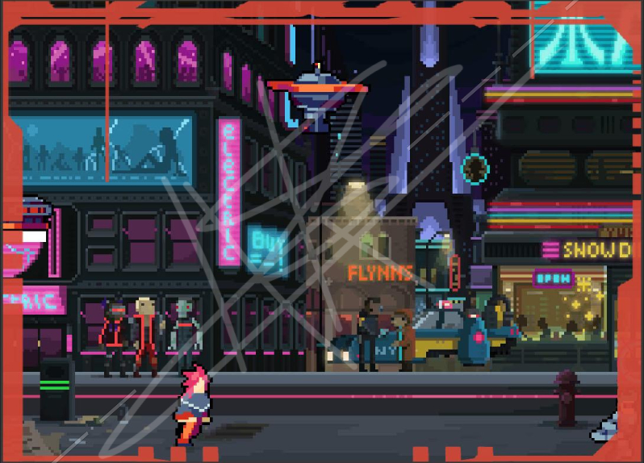
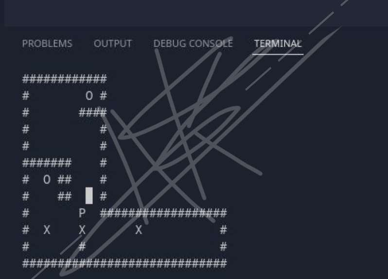
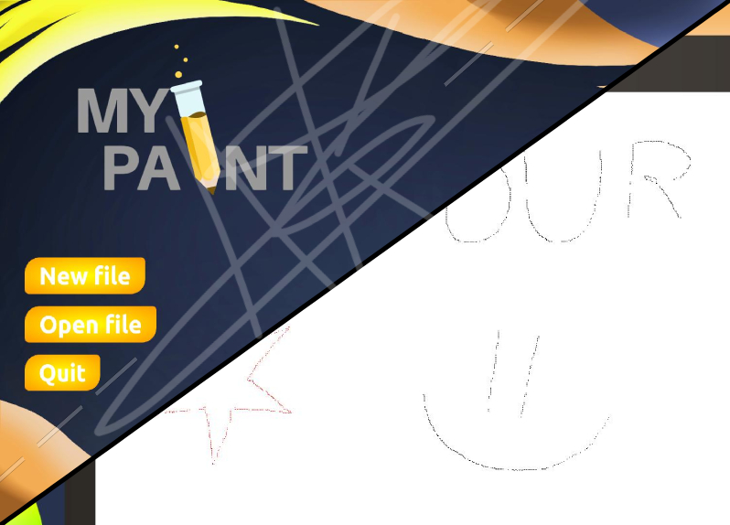
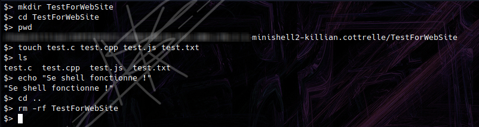
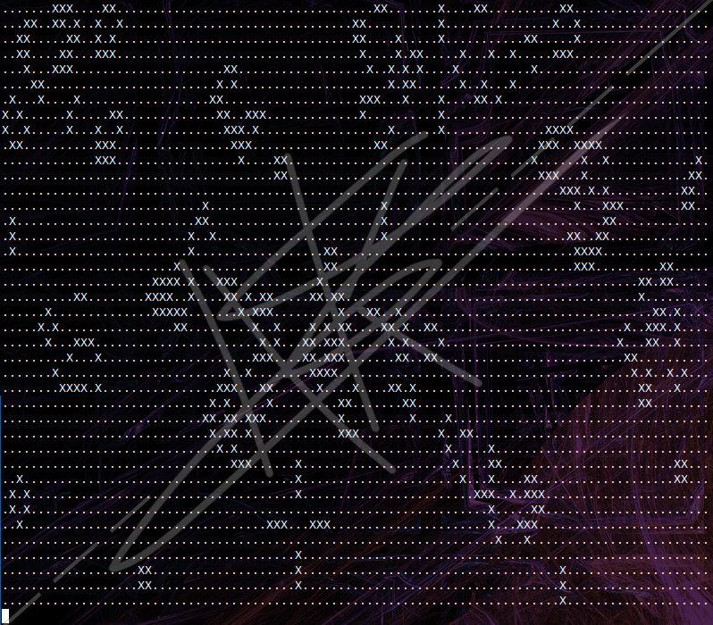

Découvrez mes projets
Qu'allez vous découverir ?
En parcourant cette page, vous découvrirez une variété de projets, allant de la conception de jeu vidéo
à la recréation d'un prototype de paint, en passant par la recréation d'un Shell a l'interieur d'un autre shell.
Chaque projet est soigneusement présenté avec des détails pertinents et des captures d'écran illustratives.
Chacun de ces projets a été réalisé avec une approche personnalisée et axée sur les besoins spécifiques au projet.
En explorant ces projets, vous pourrez avoir un aperçu de ma créativité, de ma capacité à résoudre des problèmes et de mon souci du détail.
Chaque projet est accompagné d'une description détaillée des objectifs, des défis rencontrés et des solutions mises en œuvre pour atteindre les résultats souhaités.
Je suis fier de ces projets et du travail accompli. Chaque expérience m'a permis de grandir en tant que professionnel et de continuer à développer mes compétences.
J'espère que cette sélection vous inspirera et vous donnera un aperçu de mon expertise et de ma passion pour mon métier.
CyberDuckHunt :
Mon premier projet graphique à Epitech a été une expérience passionnante de création de
jeu vidéo. il s'agit d'un jeu de tir en utilisant la bibliothèque CSFML du langage C, inspiré du célèbre
jeu vidéo Duck Hunt de 1984 et en lui donnant une toute nouvelle ambiance cyberpunk.

Le résultat ? CyberDuckHunt, un jeu captivant où les joueurs se lancent dans une chasse aux cyberPsycho et aux drones.
Sokoban :
Dans le cadre de mon cursus à Epitech, j'ai eu l'opportunité de travailler sur mon tout premier projet avec la bibliothèque Ncurses en C : un jeu Sokoban. Ce projet a été une expérience enrichissante, me permettant de mettre en pratique mes connaissances en programmation.

Le Sokoban est un jeu de réflexion dans lequel le joueur doit déplacer des caisses(X) vers des emplacements spécifiques(O) en utilisant un personnage(P). Ce concept simple mais stimulant nécessite une planification stratégique et une analyse minutieuse des mouvements pour résoudre le niveau.
My_Paint :
Le projet My_Paint est une réinterprétation du célèbre logiciel de dessin Paint, recodé en utilisant les outils de base du langage C et la bibliothèque graphique CSFML.

Nous avons eu l'occasion de réaliser notre premier projet à deux du module graphique d'Epitech, ce qui nous a permis de nous concentrer sur les aspects qui nous intéressaient le plus : le front-end, le back-end ou le développement full-stack. Dans mon équipe, j'ai choisi d'assumer le rôle de full-stack, car j'étais le seul membre capable de travailler à la fois sur le front-end et le back-end.
Compresseur de text :
Cette fois-ci, tournons-nous vers un projet plus techniques, toujours réalisé avec le langage C. Initialement, notre objectif était de développer un compresseur de fichiers et d'images. Cependant, en raison d'un manque de travail de mon coéquipier, nous avons décidé de nous concentrer uniquement sur la compression de fichiers texte. Ainsi, notre projet s'est recentré sur la conception d'un compresseur de texte utilisant l'algorithme RLE.
Notre programme a été réalisé en utilisant l'algorithme de compression RLE (Run-Length Encoding), considéré comme l'un des algorithmes les plus simples de compression. Son principe consiste à regrouper les données identiques sous la forme d'un nombre suivi du caractère correspondant. Par exemple, la séquence de caractères 'mmm' serait compressée en '3m', réduisant ainsi la taille de la phrase. Cependant, malgré sa simplicité, il convient de noter que l'algorithme RLE est également moins efficace en termes de taux de compression par rapport à d'autres algorithmes plus avancés.
MiniShell :
Le projet Minishell d'Epitech nous plonge au cœur du fonctionnement des shells, ces interfaces en ligne de commande omniprésentes dans le monde de la programmation. Notre objectif est de recoder un shell à partir de zéro, en utilisant le langage C, tout en incorporant les fonctionnalités essentielles d'un shell classique.

Dans ce projet, je me suis confrontés à de nombreux défis stimulants. Tout d'abord, nous devons comprendre le fonctionnement interne d'un shell, y compris la gestion des processus, la redirection des entrées/sorties, les pipes, les signaux, etc. Je devais également me familiariser avec les appels système et les bibliothèques C appropriées pour implémenter ces fonctionnalités. L'une des parties cruciales de ce projet consiste à analyser et à interpréter les commandes saisies par l'utilisateur. J'ai dû mettre en place un analyseur syntaxique pour décomposer les commandes en arguments et identifier les opérateurs spéciaux tels que les redirections ou les pipes. Ensuite, j'ai du exécuter ces commandes en créant les processus appropriés, en redirigeant les entrées/sorties selon les spécifications de l'utilisateur, et en gérant les signaux tels que Ctrl+C.
GameOfLife :
Le projet 'Game of Life' est une implémentation du célèbre automate cellulaire imaginé par le mathématicien britannique John Conway. Cette simulation, réalisée en langage C, explore les règles simples régissant la vie, la reproduction et la mort des cellules dans un univers virtuel.

L'objectif principal de ce projet est de fournir une implémentation efficace et précise de ces règles, en utilisant les fonctionnalités du langage C. En créant un environnement virtuel cohérent, nous permettons aux utilisateurs de visualiser l'évolution des cellules au fil du temps et d'observer des structures complexes émerger de manière autonome.
Ce projet a une signification particulière pour moi, car il représente ma toute première réalisation personnelle disponible au public sur ma page GitHub. Il m'a permis d'approfondir mes connaissances en bash, en créant un système complet d'installation automatique, de mise à jour et de désinstallation du programme, accompagné d'une compilation personnalisée.
C'est avec une grande fierté que j'ai développé ces fonctionnalités, car elles démontrent ma capacité à mettre en place un processus fluide pour les utilisateurs. Grâce à cette expérience, j'ai renforcé mes compétences en automatisation des tâches, en gestion des dépendances et en personnalisation des environnements de développement.
En conclusion, cette page web représente une vitrine de mes réalisations et de mon parcours dans le domaine de l'informatique. À travers cette sélection de projets, j'ai pu exprimer ma passion pour la création, l'innovation et la résolution de problèmes complexes. Chacun de ces projets reflète mon engagement à repousser les limites de mes compétences, à acquérir de nouvelles connaissances et à mener des réalisations techniques concrètes.
Cette page est vouée à évoluer au fils de mon parcours.
Vous voulez en savoir plus sur un projet en particulié ?
N'hésitez pas à me contacter grâce à la page À PROPOS !